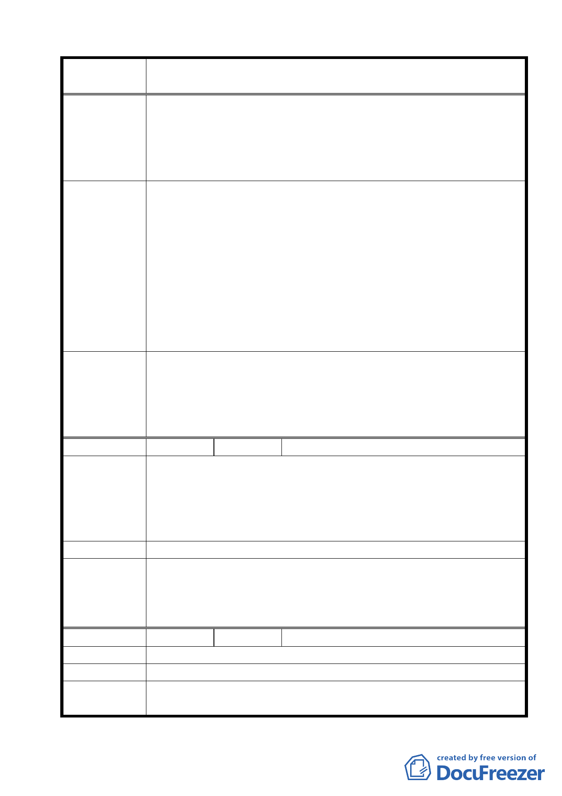

案名
建議辦法
委員會議
決議
編號
陳情理由
建議辦法
委員會議
決議
編號
陳情理由
建議辦法
委員會議
決議
變更臺北市士林區陽明山山仔后地區第二種住宅區為特定住宅區
細部計畫案
想，乃以「保護國家土地資源，提昇公有土地的公共使用」、「特
殊地景（美軍宿舍建築群及所處環境）的保存維護與再利用」、
「建構示範生態社區，落實永續發展理念」、「整合地區資源，
活絡地區發展」為計畫目標，以提昇公共性使用暨活絡地區發
展。與本人欲拆除舊屋重新申請建築，應不相違背。
本人所座落土地並不在禁建範圍，實因依建築線指示圖必須
與該筆公有土地合併後，方可申請建築，且該筆公有土地現況為
既成道路，面積僅為 6.12 ㎡，依「台北市土地使用分區管制規則」
中第二種住宅區規定須退縮前院 5 米，故依法該筆公有土地未來
申請建築僅能做為法定空地使用與 貴局所公告實施之禁建目的
並不影響；然因本細部計畫公展期間居民意見紛歧，勢必延宕本
細部計畫公告實施日期，故懇請市府發展局體察本人實際居住安
全及生活品質之迫切性，協助排除該筆公有土地納入本細部都市
計畫範圍、核發土地合併使用證明書並准予申請建築，煩勞之處
請見諒。
1.有關本項陳情市府業說明仍需俟禁建解除後方得申請。
2.本案除市府本次會議所送修正計畫書第 2-20 頁（四）文字修正
為「建築基地地面高度設計：建築基地地面設計以維持原地形
地面為原則，但經整地後基地地面高度不得超過 1.2 公尺」外，
其餘依市府本次會議所送修正計畫書內容通過。
2 陳情人 葉漢祥
本區原依台北市使用分區管制規則，第二種住宅區建蔽率 35%、
容積率 120%、限高 17.5M（＜5F），另又受相關山坡地法令之限
制；若依新法修訂內容改為建蔽率 40%、容積率 120%、限高 14M
（＜4F），此舉嚴重影響此區地主容積之使用權利，請勿因本區部
份土地為台銀或政府部門所有而犧牲其他私地地主之相關權利。
請維持原建蔽率與限高。
本案除市府本次會議所送修正計畫書第 2-20 頁（四）文字修
正為「建築基地地面高度設計：建築基地地面設計以維持原地形
地面為原則，但經整地後基地地面高度不得超過 1.2 公尺」外，其
餘依市府本次會議所送修正計畫書內容通過。
3 陳情人 方儉
臺北市都市計畫委員會知法犯法。
本案應終止變更。政風、調查單位應立即調查本案有無過失貪瀆。
1.市府依法定程序提送都市計畫變更案件到會，本會依法進行審
議。
15